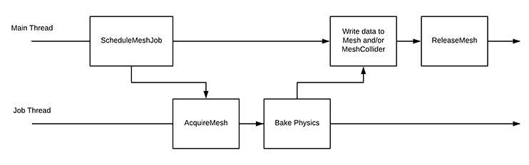

XR SDK Meshing subsystem¶
The Meshing subsystem extracts mesh data from an external Provider and converts it to a UnityEngine.Mesh. It can also generate an optional UnityEngine.MeshCollider without incurring any main thread stalls.
The main use case for the Meshing subsystem is to surface procedurally-generated meshes, generally from some sort of spatial mapping algorithm like the one generated from a depth camera. There is no limit on the size of the mesh, or the frequency of updates.
Mesh generation occurs asynchronously on a background thread, so extracting data from an external provider doesn’t block the main thread to, for example, bake the mesh collider.
Control flow¶
The Meshing subsystem has two basic queries:
- Get the state of all tracked meshes (for example, New, Changed, Unchanged, Removed).
- Generate a particular mesh. Meshes are identified using the TrackableId identifier.
Getting MeshInfos¶
C# users can get the mesh infos from the XRMeshSubsystem instance method:
public bool TryGetMeshInfos(List<MeshInfo> meshInfosOut);
This maps directly to the C call to UnityXRMeshProvider::GetMeshInfos and is typically called once per frame to obtain the current list of tracked meshes.
The following C implementation can use the provided allocator object to allocate an array of UnityXRMeshInfos which it should then fill out:
UnitySubsystemErrorCode(UNITY_INTERFACE_API * GetMeshInfos)( UnitySubsystemHandle handle, void* pluginData, UnityXRMeshInfoAllocator * allocator);
The allocated memory is owned by Unity (typically using a stack allocator, so allocations are very fast):
typedef struct UnityXRMeshInfo { UnityXRTrackableId meshId; bool updated; int priorityHint; } UnityXRMeshInfo;
If nothing has changed since the last call to TryGetMeshInfos, you can return false to avoid filling out the array each frame.
| Field | Description |
|---|---|
| meshId | A 128-bit unique identifier. The Provider generates these values, which can be a pointer to mesh data, but you need to be able to generate a specific mesh by its id. |
| updated | The only state Unity needs is whether the mesh has been updated since the last time it was generated. Determining whether the mesh was added or removed is done automatically; reporting the existence of a mesh that Unity doesn’t know about will be surfaced as Added, while not reporting a mesh that was previously reported will mark the mesh as Removed. |
| priorityHint | C# to interprets this value, but you might want to, for example, provide a C# component that prioritizes which mesh to generate based it. Unity doesn’t use this value. |
In C#, TryGetMeshInfos populates a List<MeshInfo>, which includes the mesh state:
public enum MeshChangeState { Added, Updated, Removed, Unchanged }
Based on the mesh change state and the priority hint value, a C# component can then decide which mesh(es) to generate next.
Mesh generation¶
From C#, you can generate a specific mesh asynchronously using the XRMeshSubsystem instance method:
public extern void GenerateMeshAsync( TrackableId meshId, Mesh mesh, MeshCollider meshCollider, MeshVertexAttributes attributes, Action<MeshGenerationResult> onMeshGenerationComplete);
This enqueues a mesh for generation. You can enqueue as many meshes as you need, but you might want to limit the number of meshes that are concurrently generated to a few at a time.
Unity will always call the provided onMeshGenerationComplete delegate will always be called, even if an error occurs.
Meshes are generated in two phases, following an acquire and release model:

UnitySubsystemErrorCode(UNITY_INTERFACE_API * AcquireMesh)( UnitySubsystemHandle handle, void* pluginData, const UnityXRTrackableId * meshId, UnityXRMeshDataAllocator * allocator);
AcquireMesh is called on a background thread, so you can do as much processing in this method as you like, including computationally-intensive work such as generating the mesh itself. This function can return immediately or span several frames.
If you provide a MeshCollider to GenerateMeshAsync, Unity also computes the MeshCollider’s acceleration structure (“Bake Physics” in the above diagram). This can be time-consuming for large meshes, so it also occurs on the worker thread.
Finally, when the data is ready, Unity writes it to the UnityEngine.Mesh and/or UnityEngine.MeshCollider on the main thread. Afterwards, ReleaseMesh is called, also on the main thread:
UnitySubsystemErrorCode(UNITY_INTERFACE_API * ReleaseMesh)( UnitySubsystemHandle handle, void* pluginData, const UnityXRTrackableId * meshId, const UnityXRMeshDescriptor * mesh, void* userData);
Since ReleaseMesh is called on the main thread, it should return quickly. Typically, this is used to free resources allocated during AcquireMesh.
Memory management¶
AcquireMesh offers two means of providing mesh data to Unity: Unity-managed and Provider-managed.
Unity-managed memory¶
To let Unity manage the memory, use:
UnityXRMeshDescriptor* (UNITY_INTERFACE_API * MeshDataAllocator_AllocateMesh)( UnityXRMeshDataAllocator * allocator, size_t vertexCount, size_t indexCount, UnityXRIndexFormat indexFormat, UnityXRMeshVertexAttributeFlags attributes, UnityXRMeshTopology topology);
This returns a struct with pointers to buffers based on an intersection of these attributes and the vertex attributes requested from C#. The Provider should then copy the appropriate data to the buffers.
When you use this paradigm, you don’t have to free the memory, because Unity will recycle the memory after the call to ReleaseMesh.
Provider-managed memory¶
Instead of letting Unity manage the memory, you can point it at your own data. The data must remain valid until ReleaseMesh is called.
Use MeshDataAllocator_SetMesh to provide your own UnityXRMeshDescriptor whose non-null pointers point to valid data:
void(UNITY_INTERFACE_API * MeshDataAllocator_SetMesh)( UnityXRMeshDataAllocator * allocator, const UnityXRMeshDescriptor * meshDescriptor);
User data¶
Your AcquireMesh implementation can call:
void(UNITY_INTERFACE_API * MeshDataAllocator_SetUserData)( UnityXRMeshDataAllocator * allocator, void* userData);
Unity will pass the userData pointer back to your ReleaseMesh implementation. This is particularly useful when you’re using Provider-managed memory.
Example C# component¶
void Update() { if (s_MeshSubsystem.TryGetMeshInfos(s_MeshInfos)) { foreach (var meshInfo in s_MeshInfos) { switch (meshInfo.ChangeState) { case MeshChangeState.Added: case MeshChangeState.Updated: AddToQueueIfNecessary(meshInfo); break; case MeshChangeState.Removed: RaiseMeshRemoved(meshInfo.MeshId); // Remove from processing queue m_MeshesNeedingGeneration.Remove(meshInfo.MeshId); // Destroy the GameObject GameObject meshGameObject; if (meshIdToGameObjectMap.TryGetValue(meshInfo.MeshId, out meshGameObject)) { Destroy(meshGameObject); meshIdToGameObjectMap.Remove(meshInfo.MeshId); } break; default: break; } } } // ... while (m_MeshesBeingGenerated.Count < meshQueueSize && m_MeshesNeedingGeneration.Count > 0) { // Get the next mesh to generate. Could be based on the mesh's // priorityHint, whether it is new vs updated, etc. var meshId = GetNextMeshToGenerate(); // Gather the necessary Unity objects for the generation request var meshGameObject = GetOrCreateGameObjectForMesh(meshId); var meshCollider = meshGameObject.GetComponent<MeshCollider>(); var mesh = meshGameObject.GetComponent<MeshFilter>().mesh; var meshAttributes = shouldComputeNormals ? MeshVertexAttributes.Normals : MeshVertexAttributes.None; // Request generation s_MeshSubsystem.GenerateMeshAsync(meshId, mesh, meshCollider, meshAttributes, OnMeshGenerated); // Update internal state m_MeshesBeingGenerated.Add(meshId, m_MeshesNeedingGeneration[meshId]); m_MeshesNeedingGeneration.Remove(meshId); } } void OnMeshGenerated(MeshGenerationResult result) { if (result.Status != MeshGenerationStatus.Success) { // Handle error, regenerate, etc. } m_MeshesBeingGenerated.Remove(result.MeshId); }